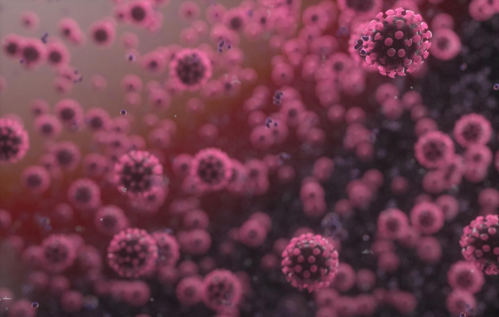

Covid-19: Remédio encontrado por brasileiros apresenta 94% de eficácia
Victor Pinheiro, editado por Matheus Luque 15/04/2020 13h58Medicamento apresentou eficácia de 94% no combate ao coronavírus em testes in vitro e será testado em pacientes com a doença no país
O ministro da Ciência e Tecnologia, Marcos Pontes, afirmou, em coletiva de imprensa na manhã desta quarta-feira (15), que um novo fármaco encontrado por cientistas brasileiros foi aprovado pelo Comitê Nacional de Ética em Pesquisa (Conep) para testes clínicos em pacientes com Covid-19, doença causada pelo novo coronavírus.
De acordo com o representante do Governo, o medicamento apresentou eficácia de 94% em testes contra o vírus, conduzidos em ambientes controlados.
A pesquisa será realizada com 500 pacientes em sete hospitais do Brasil, dos quais cinco estão no Rio de Janeiro e os outros dois em Brasília e São Paulo. Após assinarem um termo de voluntariado, os pacientes serão divididos em dois grupos: um deles vai receber doses diárias do medicamento, enquanto o outro será submetidos a placebos - isto é, a simulações de tratamento. Segundo Pontes, a expectativa é que os resultados sejam revelados nas próximas semanas.
O fármaco promissor foi descoberto em meio ao estudo de 2 mil medicamentos. Os cientistas observaram as interações de cada uma das substâncias com as enzimas e propriedades já conhecidas do novo coronavírus, por meio de supercomputadores equipados com recursos de inteligência artificial.
A partir dos experimentos, foram selecionados seis fármacos para os testes em ambientes controlados nos laboratórios. Agora, essa única substância seguirá para testes clínicos com pacientes infectados pela Covid-19.
Vacina BCG
Na coletiva, o ministro Marcos Pontes também citou que a pasta formalizou o repasse de R$ 600 mil para testes relacionados à vacina BCG, substância aplicada geralmente em crianças para prevenir a ocorrência de turberculose. A ideia é testar se vacinados são mais resistentes ao coronavírus.
De acordo com informações da Agência Brasil, dados recentes indicam que países que mantêm o uso da BCG apresentaram menores proporções de Covid-19 em comparação a nações que suspenderam o uso da vacina, como EUA, Espanha e Itália. A eficácia do tratamento também já é testada em outros países, como a Austrália.